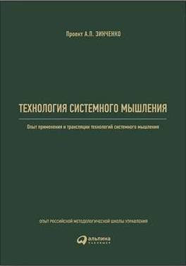
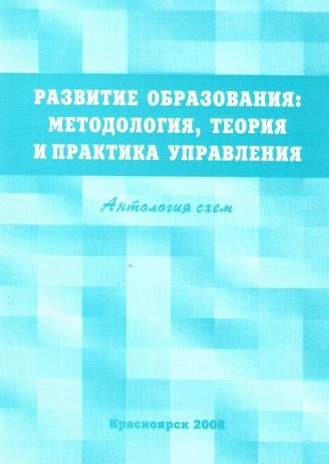

Библиотека





- А.Зинченко «Базовые схемы и представления для методологической работы»
- А.Зинченко Схематизация как средство и форма организации интеллектуальных работ, 1995
- А.Зинченко Игровая педагогика. Часть 3 2000
- А.Зинченко Технология системного мышления 2017
- Громыко Ю.В. Метапредмет «Знак» 2001
- Громыко Н.В. Обучение схематизации 2005
- Морозов Ф.М. Схемы как средство описания деятельности, 2005, 181 с.
- Мрдуляш П.Б. "Китайские стратагемы" 2007
- Горностаев А.О. Методологический аспект образования 2007
- Анисимов О.С. Схемы и схематизация 2007
- Анисимов О.С. Схемы и язык схематических изображений, 2008
- Антология схем Красноярск, 2008
- Анисимов О.С. Мышление стратега. Выпуск 7 2009
- Розин М.В. Научные исследования и схемы в ММК 2011
- Розин В.М. Введение в схемологию 2011
- Иволгина Л.И. Схематизация в обучении 2011
- Анисимов О.С. «100 схем» 2013